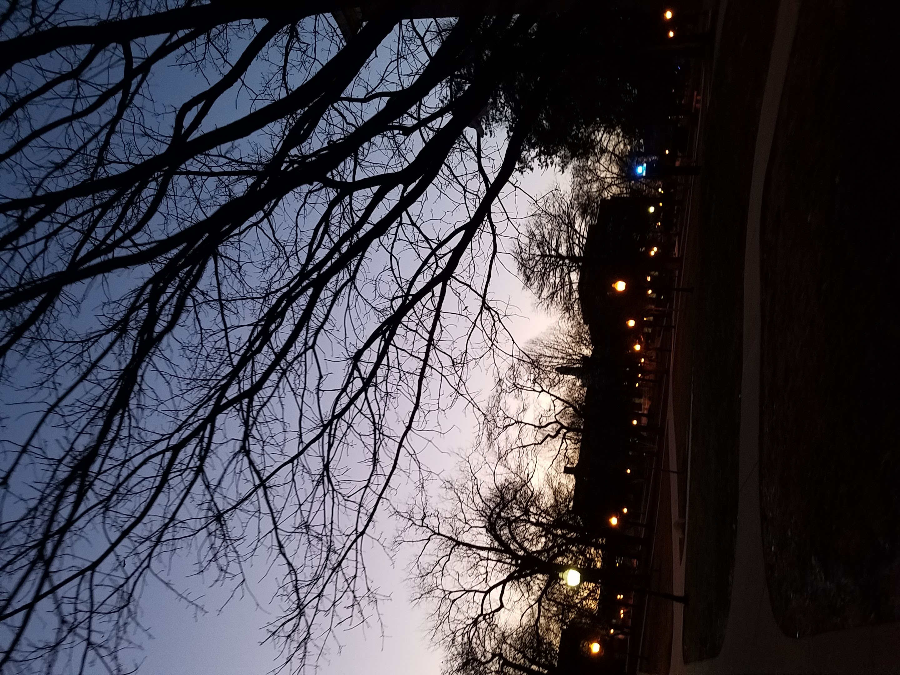
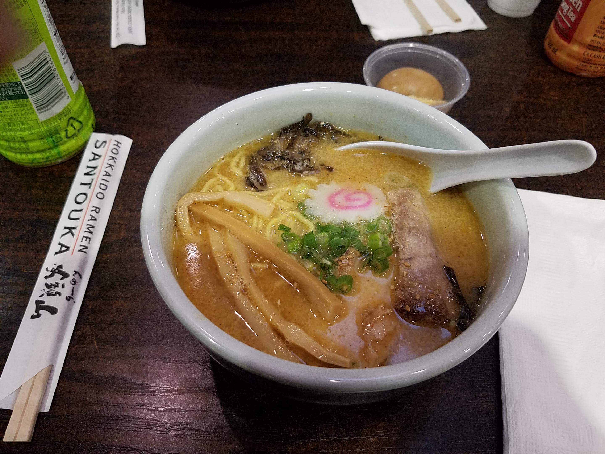
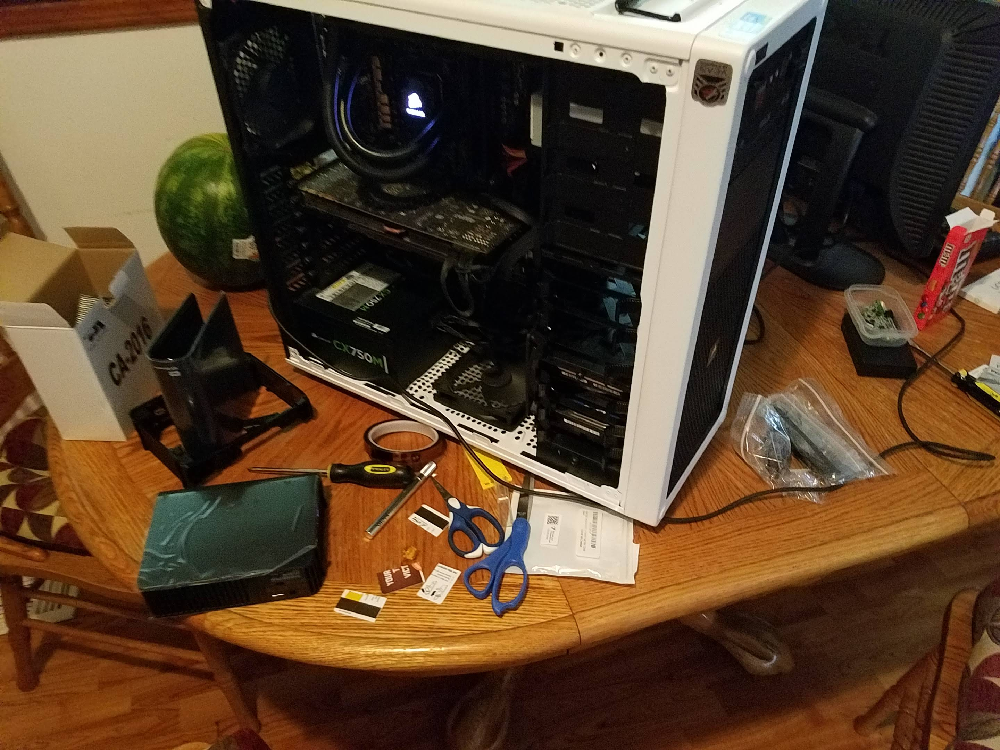
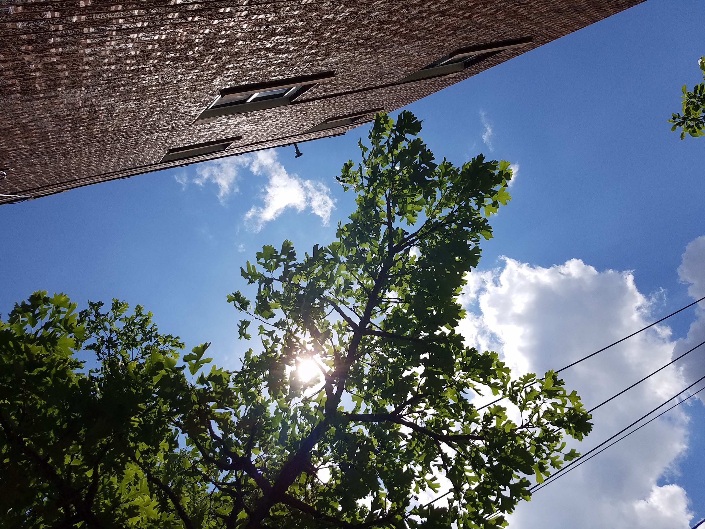

As the sun dips over the horizon on campus.

Ramen at a local joint. My favorite guilty pleasure food.

Shucking two Western Digital Elements hard drives into my desktop, mainly for Plex and "Linux ISOs." I ended up needing to cover some pins on the power connectors with kapton tape in order for my motherboard to recognize the drives.

Summer walk